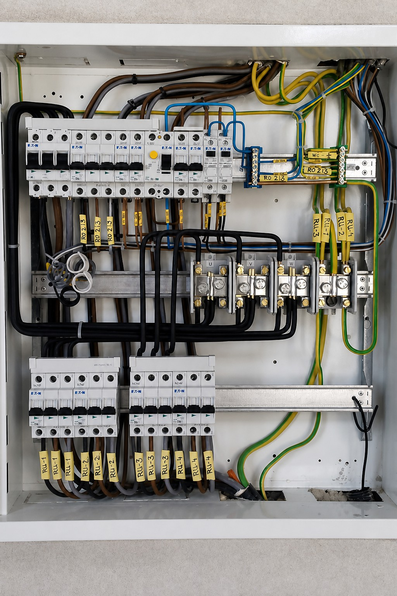
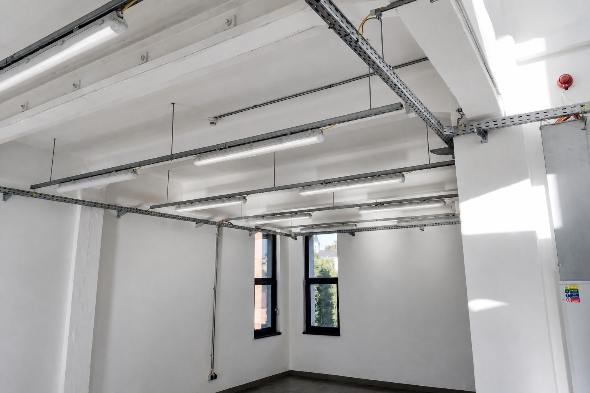
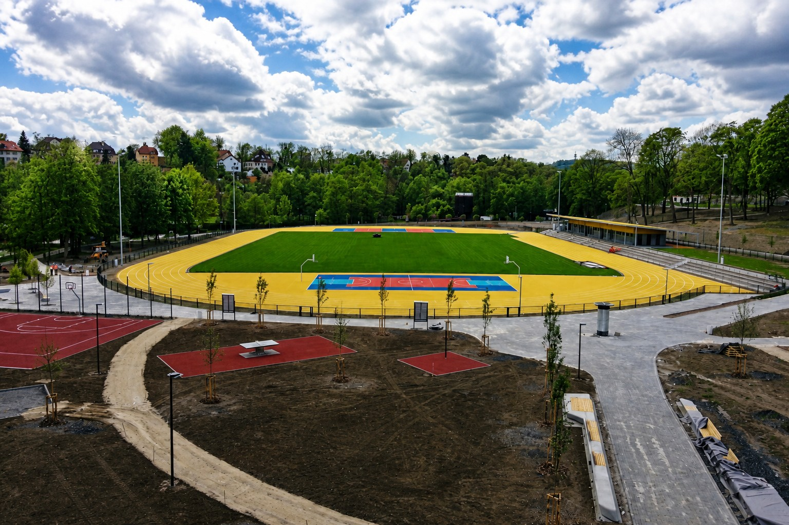
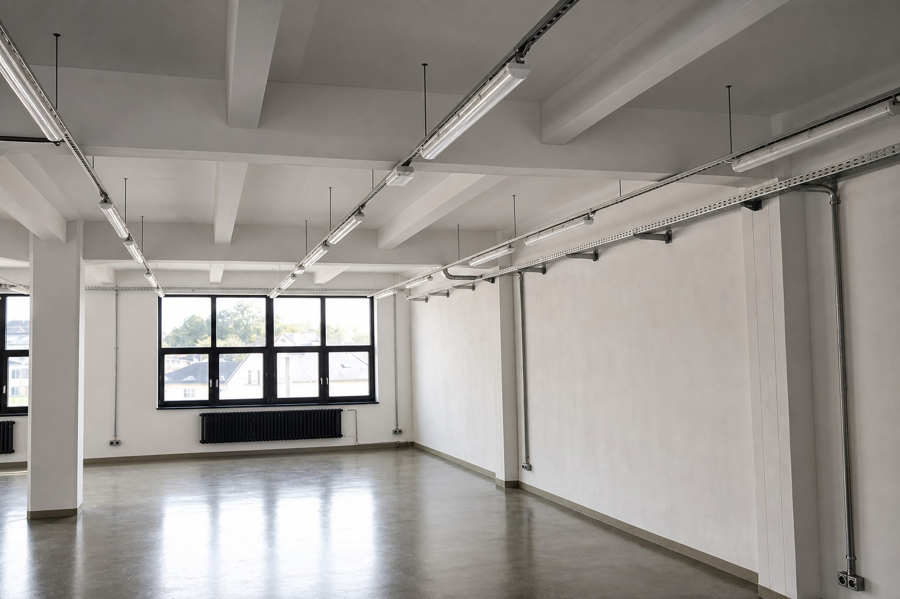
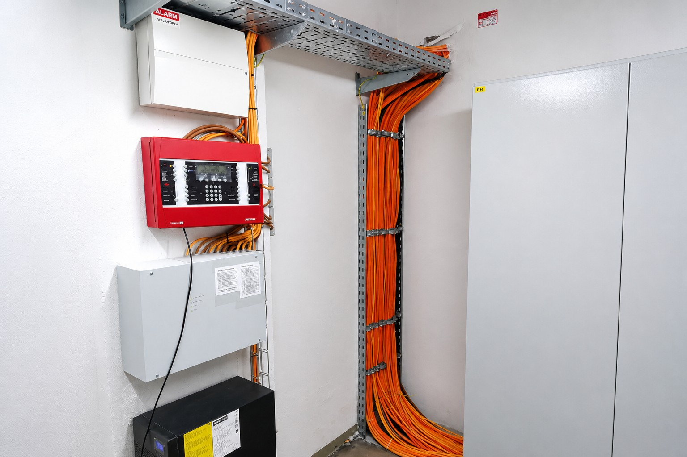
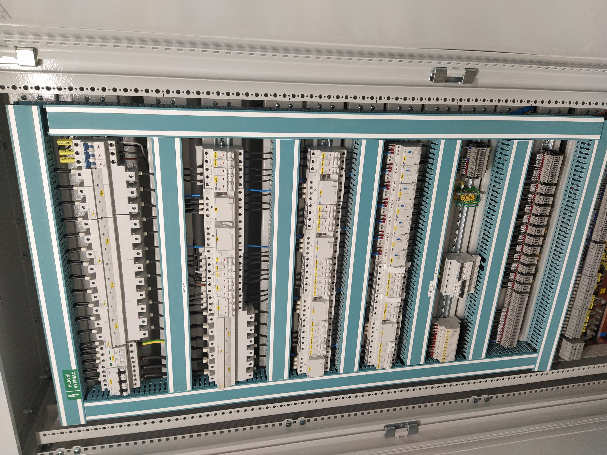

Nízké napětí (NN)
Vyškolené montážní týmy pro drobné opravy i kompletní elektroinstalace firemních a průmyslových objektů.
Pro služby v oblasti elektroinstalace máme vyškolené montážní týmy. Poskytujeme drobné služby pro domácnosti (např. opravy elektrických zařízení), realizace kompletních elektroinstalací pro firemní zákazníky i pro průmyslové objekty. Samozřejmostí je i záruční a pozáruční servis, opravy a rekonstrukce.
- instalace el. spotřebičů
- úpravy vnitřních i venkovních elektroinstalací
- montáž elektrického vytápění (přímotopy, el. kotle, akumulační kamna)
- vyhotovení elektrických přípojek, montáž elektroměrových rozvaděčů
- montáž osvětlení včetně osvětlení sportovních hal a zimních stadionů
- montáž ozvučení (místní rozhlas)
- specializované aplikace (např. ovládání vytápění rekreačních objektů telefonem, atp.)
- montáže izolovaných vedení nízkého napětí (AES)
- práce pod napětím na zařízení nízkého napětí
- výměny elektroměrů za účelem vycejchování
- montáž HDO
Vybavení montážního týmu je na profesionální úrovni, při práci v interiérech používáme zařízení s odsáváním vrtaného materiálu a vysoko výkonné průmyslové vysavače. Jsme schopni zajistit i dokončovací práce – zednické či malířské služby.





